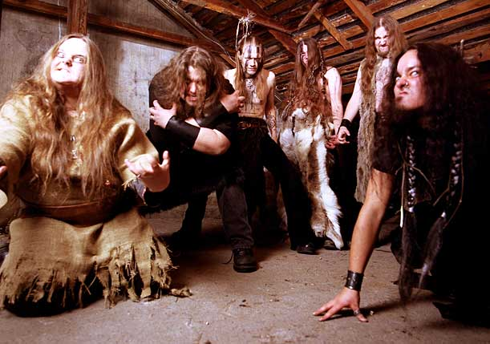

Recent News
Belphegor Frontman Accosted at Russian Airport
Russia has a history for not being very accommodating to anything they consider "outside the norm."
Russia has made being gay a federal offense.
They imprisoned the all girl punk band Pussy Riot.
They arrested the extreme metal band Behemoth.
Cannibal Corpse and Marilyn Manson have had numerous shows cancelled by the government.
Now it seems like the Austrian black metal band Belphegor is getting their turn to taste some Russian Hospitality.
Helmuth Lehner, the bands frontman, was spit on by a Russian Orthodox Activist at a airport earlier this year. The man then attempted to assault him. Luckily, Belphegor was on tour with Nile and Karl Sanders-the band’s amazing guitar player
stepped in to break it up.
Metal After Death
Recently a die hard metal fan from Illinois named Nick passed away.
Among his final wishes were to have his ashes spread in the mosh pit at live performances of some
of his favorite bands including Dying Fetus, Behemoth, and Taake.
His metal bretheren David Rich has been bringing a portion of his ashes with him to metal concerts
in the Chicago area so that his final request can be fulfilled.
Obama thanks Finland for the Metal
In a recent trip to Finland, Barack Obama thanked them for sharing their culture and their Metal.

Pictured: Finntroll
I also thank Finland for the Metal.